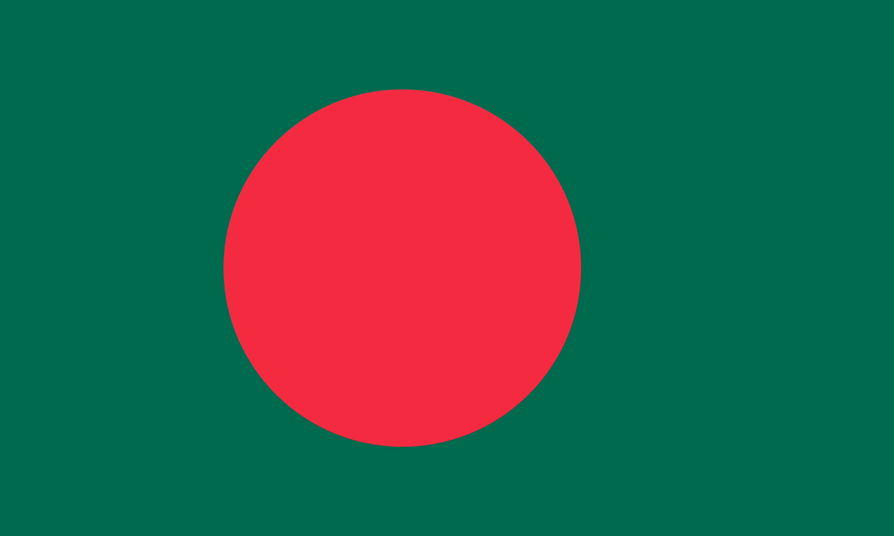

Hi, I am Owasimul Sidick. I attend Brooklyn Technical High School and will be a senior this upcoming year. I pursued the Software Major offered in the school and have learned to love coding. I have two pet birds named Sun and Moon (both parakeets) and love history.
In middle school is the first time I met coding. I had no idea what coding was until I used Scratch. I enjoyed how I could create something out of seemingly useless text. When choosing a major, my mom mentioned how as long as you know something related to technology and computers, you could not go wrong. Besides coding, I practice a bit of cardistry, card flourishing, and read about history of all types. My birds are new yet I love their company, despite their fighting.

Culture is one of my biggest ideals. I used to be fearful of my culture and if people found out about it. Now, I love my culture and every aspect. From food and clothing to music and movies, I have refused to give up my culture, despite how people may think of me. Family is also a big part of me and I have a close connection with not only my immediate family, but my extended family. I also keep friendships as strong as possible as I value people as a whole.
I hope to achieve something in life as a whole. My parents sacrificed their lives in their home country so that I may gain better opportunities. I don't want to be famous but I do want to be able to support myself and my family. I also hope that my parents can be proud of what I can achieve. I do wish to keep pursuing the technical field but also to keep exploring as, although software is cool, I may want to explore other fields that may interest me.